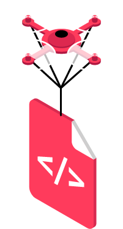

Bakgrund
Betakronan startades för att svara på Riksbankens önskan om att få in synpunkter på projektet e-krona. Ett projekt som syftar till att utreda och utvecka ett av staten garanterat digitalt komplement till kontanter. För oss är det en självklarhet att alla ska kunna delta i den digitala ekonomin. Vi ser det som en grundläggande rättighet att kunna ta del av den samhällsinfrastruktur som betalningstjänster utgör. Vi tycker inte att indivders deltagande borde villkoras en kundrelation till en privat bank. Tyvärr är utsatta grupper såsom papperslösa, nyanlända och människor utanför banksystemet ofta begränsade till fysiska kontanter. Detta skapar svårigheter för dem att delta i samhället. Även välbärgade grupper så som turister och affärsresande upplever trösklar för att delta fullt ut i ekonomin i Sverige. För oss det det en självklarthet att samtliga grupper bör inkluderas i en lösning för e-kronan.
Plattform
Implementationen är baserad på blockkedje-plattformen Hyperledger Fabric med verktyget Hyperledger Composer. Källkoden finns upplagd på Github.
Det går även att kika närmare på Betakronans API. Klicka här nedan för att se mer hur det fungerar.
api.betakronan.se

Testa själv!
Vill du experimentera själv med Betakronan?
För att få tillgång till vår blockkedja behövs ett id-kort. Maila einar.persson@iteam.se så hör vi av oss!
Vi har byggt en enkel simulering av en betalsida på nätet som använder sig av e-krona för betalning via QR-kod. Än så länge utan identifieringsmetod.
try.snowflake.cash
Läs vårt svar
Riksbanken bad Sveriges teknikbolag och utvecklare berätta om deras vision för e-kronan. Vi vill att Riksbanken:
- Utforskar flera spår parallellt - där blockkedjeteknik utgör ett spår
- Tillåter en längre utvecklingsperiod där förståelse och arkitektur växer fram
- Lyfter in olika kompetenser (ekonomer, designers, beteendevetare, hackers, ...)
- Är radikalt öppen och transparent i processen
- Undviker “Den Stora Upphandlingen” med en enorm kravspecifikation som oundvikligen blir hopplöst inaktuell inom 3 år
Ladda ner vår rapport